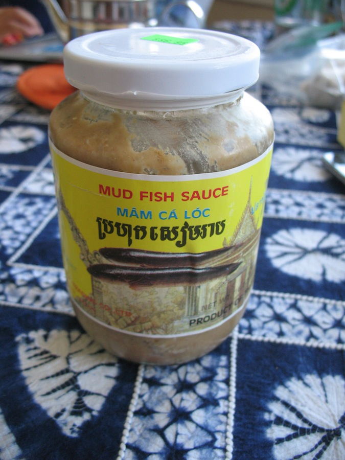

Tuek Krueng.
Tuek Kreung, one of the most popular Cambodian dishes, is a fish-based dipping sauce that is usually served with fresh raw vegetables such as cucumber, Asian basil, salad, and more. Its popularity comes from the distinctive taste of fish, Prahok, and tamarind.
Ingredients.
- 0.7lb or 300g of fish fillet
- 4cup or 1L of water
- ½tsp salt
- 5pcs of lemongrass
- 2tbsp of Prahok or fermented fish
- 1tbsp Palm sugar
- 3tbsp of lime water
- 1tsp of salt (In case fermented fish
- is not salty enough)
- 3 sawtooth corianders
- roasted peanuts
- a variety of fresh vegetables: salad, cucumber, etc.

prahok

lemon grass
sawtooth corianders
Instructions.
- First, pour 4 cups or 1L of water into a bowl. While the water is boiling, add your fish in.
- Crush 5 lemongrasses and add them along with 1/2 tbsp of salt into the boil while the fish is bowling. Then, let the fish sit until it's fully cooked. When it's done, keep it aside and let it cool down after the heat.
- Next, add 2 tbsp of Prahok or fermented fish into the same fish broth and heat it up for 2 more minutes. Then, stir it thoroughly to combine the prahok is combined with water.
- Afterwards, strain the fiber out from the fermented fish + fish broth mixture.
- Now, go back to the fish and remove its bone, leaving only their fillets.
- Next, crush the fish fillet until it's fully squashed.
- Now, we are making the actual sauce. Add 2 cups or 500ml of fermented fish broth/Prahok broth to the fish fillet. Stir it to combine the mixture.
- Add 1 tbsp of palm sugar then stir it until it completely dissolves into the mixture.
- Add 3 tbsp of lime water then stir it again to combine everything. Taste it afterward.
- In case the fermented fish/Prahok is not salty enough, add 1 tbsp of salt. It is important to adjust the taste according to your preference.
- Now, gently crush the roasted peanuts and add them to the mixture. Add as much as you want to match your preference.
- Lastly, add chopped sawtooth coriander (3pcs) in.
- Since our sauce is done, it's time to prepare fresh raw vegetables such as salad, carrots, and cucumbers and placed them on a separate plate.
- Finally, your dish is ready to be served! Take a vegetable and dip it into the sauce and enjoy your appetite!
Reference.
- “Cambodian Traditional Food "Teuk Kreung" - របៀបធ្វើទឹកគ្រឿង.” Youtube, Somar Fun, 23 Feb 2022, https://www.youtube.com/watch?v=0cX4gtNenRY
- Sarin. “ទឹកគ្រឿង Teuk Kreung.” Chef Nak, 14 Jan. 2021, Link Here
- Lemongrass (image links)
- Prahok (image link)
- Sawtooth Corianders (image link)
{kind=link}
{kind=link}
/__opt__aboutcom__coeus__resources__content_migration__serious_eats__seriouseats.com__2019__10__culantro-shutterstock-c2e4767483f9464eba603d7ab700e394.jpg){kind=link}